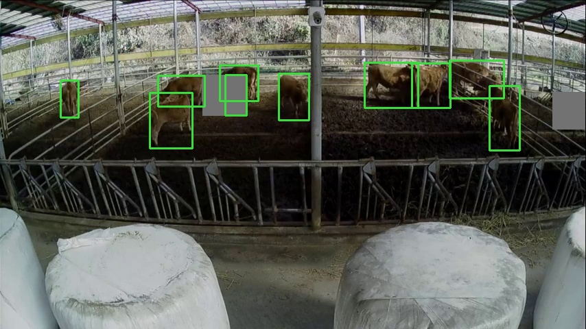

Lesson 04 / 14
Building Training Data Automatically (Pseudo-labeling)
We use YOLO11x (the teacher model) to auto-label frames from the barn videos and build a YOLO-format dataset. Without any human labeling, we obtain about 1,100 images with more than 11,000 boxes.
1. YOLO dataset format
data/hanwoo_ds/
├─ hanwoo.yaml # paths and class definitions
├─ images/train/cow01_000024.jpg ...
├─ images/val/...
├─ labels/train/cow01_000024.txt ... # same name as the image
└─ labels/val/...One line in a label file = one box: class x_center y_center width height (all normalized to 0–1)
0 0.632164 0.237500 0.068493 0.135417
0 0.401639 0.264583 0.049180 0.1208332. Four safeguards for good auto-labels
| Safeguard | Reason |
|---|---|
| Train/val split by video (val = cow02, cow09) | Neighboring frames from the same video are almost identical. Mixing them inflates the validation score, and you can no longer tell how the model performs ‘on a different video’. |
| Frame-interval sampling (1 s, 3 s for long videos) | Removes duplicate frames and keeps the 22-minute video from dominating the data |
TTA (augment=True) + high resolution 1280 | Maximizes teacher performance by merging horizontal-flip and multi-scale inference results |
| Ignore regions: boxes with confidence 0.15–0.40 are painted gray | Including ambiguous boxes as ground truth adds wrong labels; leaving them out teaches the model that those cattle are ‘background’. Graying them out avoids both. |

3. Code
📄 scripts/prepare_dataset.py
"""Automatic training-data construction (pseudo-labeling / knowledge distillation).
A large COCO model (teacher: YOLO11x + TTA, high resolution) auto-labels barn video frames to build
a single-class 'hanwoo' YOLO dataset. Fine-tuning a lightweight model (student: YOLO11s) on it
yields a fast detector specialised for the barn (fence occlusion, distant cows, cow/horse confusion).
- train / val split per video (mixing frames of one video into both sides overestimates performance)
- frame sampling interval: 1 s for short videos, 3 s for long ones (minimises duplicate frames)
- teacher confidence >= hi (0.4) is a label; 'ambiguous' boxes between lo and hi are painted grey as ignore regions
→ they become neither object nor background during training, preventing noisy labels.
- classes used: cow(19), horse(17). sheep is excluded because it misdetects white feed bales
usage: python scripts/prepare_dataset.py E:/Video/cow --val cow02 cow09
"""
import argparse
import shutil
import sys
from pathlib import Path
import cv2
sys.path.insert(0, str(Path(__file__).resolve().parent.parent))
from hanwoo.config import DATA_DIR # noqa: E402
ANIMALS = [17, 19] # horse, cow → 'hanwoo' candidates (sheep excluded: many false hits on bales)
def main():
ap = argparse.ArgumentParser()
ap.add_argument("video_dir")
ap.add_argument("--val", nargs="+", default=["cow02", "cow09"])
ap.add_argument("--teacher", default="yolo11x.pt")
ap.add_argument("--imgsz", type=int, default=1280)
ap.add_argument("--hi", type=float, default=0.40)
ap.add_argument("--lo", type=float, default=0.15)
ap.add_argument("--out", default=str(DATA_DIR / "hanwoo_ds"))
a = ap.parse_args()
from ultralytics import YOLO
teacher = YOLO(a.teacher)
out = Path(a.out)
if out.exists():
shutil.rmtree(out)
for s in ("train", "val"):
(out / "images" / s).mkdir(parents=True)
(out / "labels" / s).mkdir(parents=True)
stats = {"train": [0, 0, 0], "val": [0, 0, 0]} # frames, boxes, ignored boxes
for vp in sorted(Path(a.video_dir).glob("*.mp4")):
split = "val" if vp.stem in a.val else "train"
cap = cv2.VideoCapture(str(vp))
fps = cap.get(cv2.CAP_PROP_FPS) or 24
n = int(cap.get(cv2.CAP_PROP_FRAME_COUNT))
every = int(fps * (3 if n / fps > 300 else 1))
fi = 0
while True:
ok = cap.grab()
if not ok:
break
if fi % every == 0:
_, frame = cap.retrieve()
r = teacher.predict(frame, imgsz=a.imgsz, conf=a.lo, classes=ANIMALS, agnostic_nms=True,
augment=True, verbose=False)[0]
confs = r.boxes.conf.cpu().numpy()
amb = (confs >= a.lo) & (confs < a.hi)
for x1, y1, x2, y2 in r.boxes.xyxy.cpu().numpy()[amb].astype(int):
frame[y1:y2, x1:x2] = (114, 114, 114) # ignore region (YOLO letterbox grey)
stats[split][2] += int(amb.sum())
if True:
xywhn = r.boxes.xywhn.cpu().numpy()[confs >= a.hi]
stem = f"{vp.stem}_{fi:06d}"
cv2.imwrite(str(out / "images" / split / f"{stem}.jpg"), frame)
with open(out / "labels" / split / f"{stem}.txt", "w") as f:
for x, y, w, h in xywhn:
f.write(f"0 {x:.6f} {y:.6f} {w:.6f} {h:.6f}\n")
stats[split][0] += 1
stats[split][1] += len(xywhn)
fi += 1
cap.release()
print(f"{vp.name} [{split}] done → {stats}")
(out / "hanwoo.yaml").write_text(
f"path: {out.as_posix()}\ntrain: images/train\nval: images/val\nnames:\n 0: hanwoo\n", encoding="utf-8")
print("dataset:", out, stats)
if __name__ == "__main__":
main()4. Run
python scripts/prepare_dataset.py E:/Video/cow --teacher models/yolo11x.pt --val cow02 cow09| split | Images | Ground-truth boxes | Ignore regions |
|---|---|---|---|
| train (8 videos) | 918 | 9,635 | 1,940 |
| val (cow02, cow09) | 179 | 1,918 | 220 |
Limitation: when the teacher is wrong, the student learns the mistake too. If you need higher precision, the most efficient approach is to load these auto-labels into CVAT or Label Studio and have people only correct them (model-assisted labeling). Even having people review just the validation set (val) greatly increases the reliability of the evaluation.